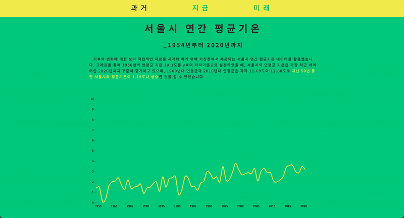
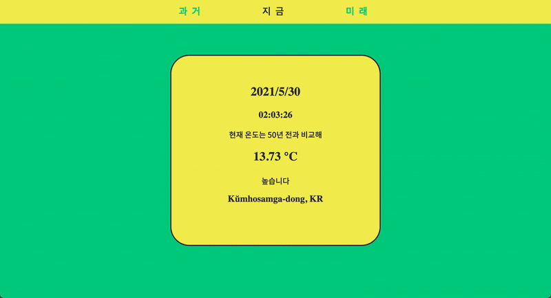

The project E-day is based on the 13th climate change response
of the DSC Korea Solution Challenge Hackathon 2021. In this project, we focused on the fact that
climate change is an invisible but important issue for us. So we wanted to present specific
figures compared to the current temperature with a visible data to see the climate change directly.
We have tried to help people understand intuitively by visualizing data on rising temperatures and
increasing greenhouse gases caused by global warming. This idea is founded from a coronavirus which
is invisible but is revealed by visual charts.
We used HTML, CSS, JS, weather API, and tensorflow for this project. First, using D3.js(a JavaScript
library for data visualization), we created a dynamic and interactive line chart of past data. In addition,
by using the weather API to receive the current location and temperature and compare in real time with the
average monthly temperature in 1973 of South Korea which got from the Korea Meteorological Administration,
it was attempted to show the temperature rise due to global warming more intuitively. Finally, a temperature
prediction model was created using machine learning TensorFlow. We tried to predict the average monthly
temperature after 2021 using the LSTM algorithm, which is widely used for prediction and analysis of time
series data arranged at regular time intervals.
The most interesting thing about this project is that when you access the now(지금) page, you can visually
compare the 1973 temperature in your city with the current temperature in real time to see how much the temperature
has risen compared to the past (Currently only check the temperature of South Korea on Feb).
Even if the temperature value is added or there is data other than the temperature, only the initial data file needs to be changed, so
the prediction model is easy to reuse, and anyone can easily identify the difference while comparing the real-time
temperature with the historical average temperature through the API. We only used the data of South korea in this
project, but it also can be used overseas data. If this idea is widely used, we can easily and effectively present
the necessity of responding to environmental changes and this will have a positive impact on solving environmental
problems we have.
E-day
#environmental issue #climate action
Data visualization, API, LSTM algorithm, 2021 ~ 🚧 in progress
About
Member
Minsik Choi
Bogeum Kim
Sehyun Jeon
Nayeon Kim
Bogeum Kim
Sehyun Jeon
Nayeon Kim

